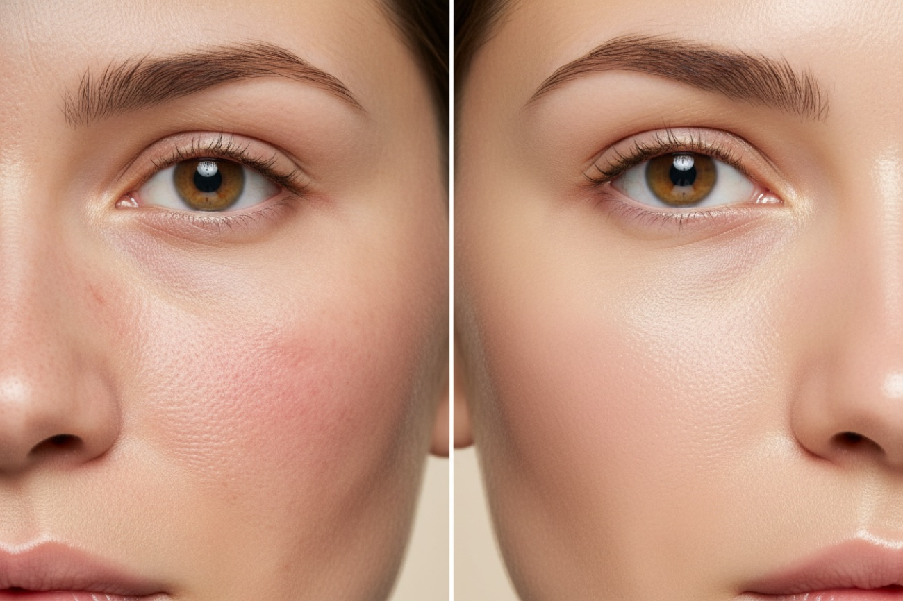

Votre rituel
Trois gestes, une barrière saine.
Une routine simple et ciblée — conçue par une biochimiste pour des résultats que vous ressentez.
Des actifs cliniquement prouvés et des botaniques innovants, pour réparer et renforcer votre barrière cutanée — sans compromis sur la planète.
Une routine simple et ciblée — conçue par une biochimiste pour des résultats que vous ressentez.
Une belle peau,
pas une peau parfaite.

Nettoyage doux et non décapant.

Repulpe et uniformise le teint.

Restaure la barrière, jamais grasse.

Premier nettoyage soyeux.
Formules exclusives,
développées au Canada
Note moyenne
des clientes
Verre Miron
recyclable à l’infini
Test sur les animaux,
100 % végane

Avant Après 6 semaines« En six semaines, ma peau est enfin calme, hydratée et lumineuse. »
« Le meilleur!! Je n’arrivais pas à apaiser et hydrater ma peau avant de découvrir ce produit. C’est devenu un essentiel. »

« Mon nettoyant préféré, sans hésiter. Ma peau est si douce et si nette. »

« Cette huile réparatrice sauve ma peau cet hiver — tellement hydratée. »

Les résultats ne viennent pas d’un seul ingrédient miracle, mais d’une synergie d’actifs et de botaniques choisis selon des preuves rigoureuses. Chaque formule est développée et fabriquée à l’interne, au Canada.
Nous tenons compte de notre impact à chaque étape — de l’origine des actifs au verre dans lequel votre sérum est expédié.
« J’évite les tendances pour ne garder que les botaniques cliniquement prouvés. »
Commencez votre rituel santé-barrière avec nos essentiels les plus aimés.
Magasiner les essentielsLà où science et durabilité se rencontrent — soyez la première informée des lancements et des offres.